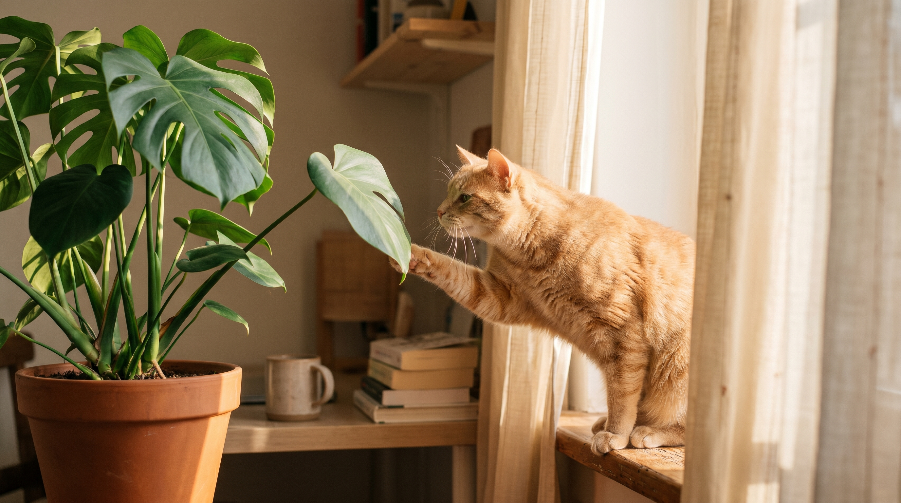

Кот объедает фикус, жуёт хлорофитум, копается в горшке с монстерой — и делает это методично, независимо от того, сыт он или голоден. Исследование с участием почти 2 300 владельцев кошек показало: 71% питомцев едят растения как минимум шесть раз в жизни, а 67% тех, кого наблюдали дольше, делают это каждую неделю. Это не странность конкретного кота — это видовое поведение. Разбираемся в причинах и в том, как сделать так, чтобы кот был доволен, а горшки — целы.
Наиболее убедительная гипотеза среди ветеринарных этологов — связь с паразитарной нагрузкой предков. Дикие предки домашних кошек регулярно были заражены кишечными гельминтами. Употребление волокнистого растительного материала помогало механически выталкивать паразитов через пищеварительный тракт. Это поведение закрепилось эволюционно и сохранилось у домашних кошек, которые уже давно не бывают на воле и гельминтов не имеют.
Доказательная база: у кошек в исследованиях чаще наблюдается поедание травы и растений при наличии симптомов желудочно-кишечного дискомфорта, а рвота после употребления зелени происходит не целенаправленно, а как побочный эффект — то есть рвота не является целью процесса.
Рацион домашней кошки состоит преимущественно из белка. Если питомец на сухом корме с низким содержанием клетчатки, кишечная перистальтика замедляется, возникает дискомфорт. Растение становится доступным источником растительных волокон — кот находит способ скорректировать пищеварение самостоятельно.
Что с этим делать: проверьте состав корма. Содержание клетчатки (crude fiber) должно быть не менее 2-3% в сухом корме. Некоторые ветеринарные диетологи рекомендуют добавлять в рацион тыкву или специальные добавки с клетчаткой при систематическом поедании растений кошкой.
Растение — это объект с текстурой, запахом, движением (листья качаются), сопротивлением при укусе. Для кошки, которая проводит 10-12 часов в пустой квартире, это насыщенный сенсорный опыт. Исследования показывают: кошки жуют растения значительно чаще в периоды, когда их недостаточно стимулируют — мало игровых сессий, нет кошачьих трав, нет окна с видом на улицу.
Это объясняет, почему одни кошки жуют конкретный горшок на подоконнике, но игнорируют такой же в углу: дело не в растении, а в локации с максимальным движением и запахом.
Повторяющееся монотонное действие — жевание, копание в земле, выщипывание листьев — работает как самоуспокоение. Аналогично тому, как коты вылизываются при стрессе. Если кот начал активно жевать растения после переезда, появления нового питомца или ребёнка, длительного отсутствия хозяина — это поведенческий индикатор тревоги.
Исследование, опубликованное в журнале Applied Animal Behaviour Science, фиксировало снижение тревожных маркеров у кошек после эпизодов жевания травы. Это не патология — это регуляция.
Пика — это компульсивное поедание несъедобных предметов: ткань, пластик, резина, шнуры, земля из горшков. Пика классифицируется как тревожное расстройство и требует ветеринарного вмешательства. Важно отличать её от нормального интереса к растениям.
Признаки, что поведение вышло за норму:
В этих случаях — к ветеринару. Пика может указывать на дефицит нутриентов (особенно анемию), желудочно-кишечные заболевания или тревожное расстройство, требующее коррекции поведения.
Это критически важный список. По данным ASPCA, токсичны для кошек более 400 видов растений. Самые опасные домашние:
Относительно безопасны для кошек: хлорофитум, бамбук, орхидеи (Phalaenopsis), петрушка и укроп, валериана (но она вызывает эйфорию), кошачья мята.
Просто убрать растения — не лучший вариант, если кот настойчив: он найдёт другой объект. Работающие подходы:
Когда кот начинает есть больше растений — это иногда просто скука, а иногда симптом. Vet-AI AnimaLife позволяет описать ситуацию и получить первичную оценку: насколько поведение нормально для возраста и породы, стоит ли беспокоиться, какие симптомы требуют визита к ветеринару. Это не замена клинике, но надёжный первый шаг — особенно в ситуации, когда непонятно, паниковать или нет.